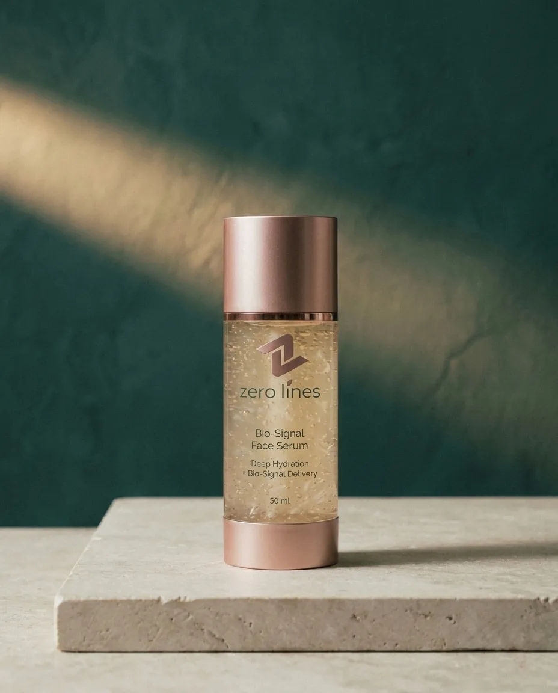
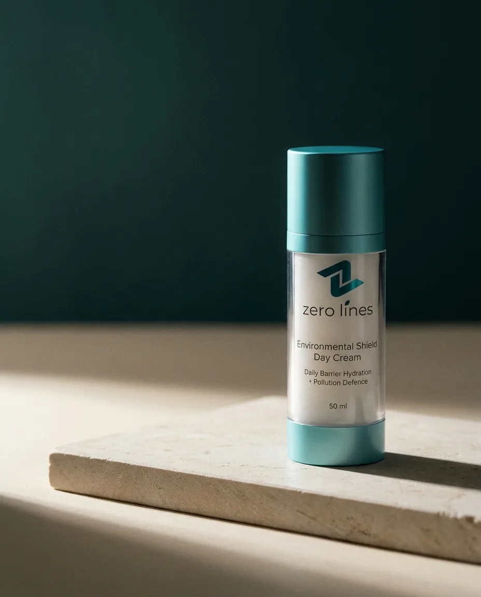
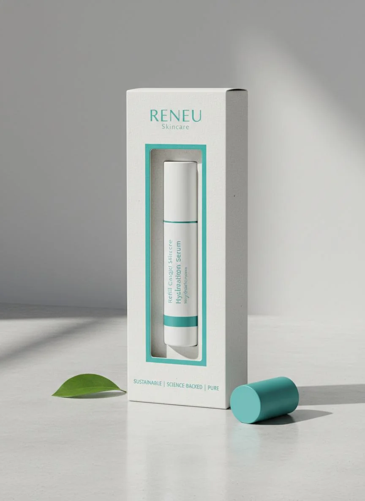

Routine
The Zero Lines Protocol: A 6-Step System for Skin Longevity
Most skincare brands sell products. We built a protocol — a sequenced system where each formulation prepares the skin for the next, and the combined effect is greater than the sum of its parts.
The Zero Lines Protocol emerged from a simple observation: the skin is not a passive surface that absorbs whatever you put on it. It's a dynamic, living organ with circadian rhythms, barrier defences, and cellular repair cycles. Throwing random active ingredients at it — however potent individually — creates chaos rather than coherence.
Why a Protocol, Not a Product
Think of it like fitness. A single exercise, no matter how effective, won't transform your body. You need strength work, mobility, recovery, and nutrition — each supporting the others. Skincare works the same way.
Our six formulations are designed to work in sequence:
- Clear — Remove dead cells and congestion so actives can penetrate.
- Signal — Send molecular messages to fibroblasts and keratinocytes.
- Hydrate — Restore water balance and barrier integrity at the cellular level.
- Protect — Defend against UV, pollution, and oxidative stress during the day.
- Repair — Support the skin's natural overnight regeneration cycle.
- Maintain — Sustain results with accessible, consistent collagen support.
Each step uses a different delivery mechanism, a different molecular weight profile, and a different time of day. Together, they cover all four mechanisms of skin ageing we identified in our complete guide to skin ageing.
Step 1: Bio-Renewal Peeling Gel
Frequency: 1–2 times per week, evening.
The foundation of any effective protocol is preparation. Dead skin cells accumulate on the surface, creating a barrier that blocks subsequent products from penetrating. Most people address this with daily scrubs — which create micro-tears in the skin — or strong acids — which can over-exfoliate and compromise the barrier.
The Bio-Renewal Peeling Gel takes a gentler approach. Brown algae extract provides enzymatic exfoliation that dissolves the bonds between dead cells without abrasion. Aloe vera juice soothes as it works. And Pyrenean mineral water delivers trace minerals that support the skin's natural shedding cycle.
The result is smoother, more radiant skin that absorbs everything you apply afterwards — without the redness, sensitivity, or rebound oiliness that aggressive exfoliation causes.

Bio-Renewal Peeling Gel
Gentle weekly exfoliation with brown algae extract, aloe vera, and Pyrenean mineral water. Clears congestion without compromising barrier integrity.
View Product →AI-Powered Analysis
See Your Skin Like Never Before
Upload a photo and answer 10 quick questions. Our AI analyses texture, tone, hydration, ageing signs, and lifestyle factors — then delivers a complete dermatologist-style report.
Analyse Your SkinStep 2: Precision Collagen Activation Syringe
Frequency: Daily, morning or evening.
This is the signalling step — the moment your skin receives the molecular instructions it needs to rebuild. The syringe format isn't just aesthetic. It allows for precise, hygienic dispensing of a highly concentrated formula without oxidation or contamination.
The key actives are hydrolysed collagen peptides small enough to reach the dermis, combined with botanical peptides derived from Alpine plants that have evolved to survive extreme environmental stress. These plant peptides don't just signal collagen production — they also support cellular resilience against UV and temperature damage.
Clinical measurements show up to 34% improvement in collagen density over 12 weeks of consistent use. But the real difference most people notice first is structural: skin that feels firmer, holds hydration better, and bounces back when pressed.

Precision Collagen Activation Syringe
Concentrated hydrolysed collagen and botanical peptides in a precision-delivery format. The core of the Zero Lines Protocol.
View Product →Step 3: BioSignal Facial Serum
Frequency: Twice daily, after cleansing.
If the Collagen Syringe is the architect, the BioSignal Serum is the messenger. It's a high-velocity molecular delivery system designed to carry botanical extracts and minerals deep into the skin surface where they can influence cellular behaviour.
The serum's base is Pyrenean mineral water — not distilled or filtered water, but water that has percolated through granite and limestone at altitudes above 1,000 metres. This gives it a mineral profile rich in magnesium, calcium, and silica — elements that support enzymatic reactions in the skin and help maintain the ionic balance cells need to function.
Botanical extracts from Alpine edelweiss and gentian root provide antioxidant protection and support the skin's natural stress-response systems. The formula is light, fast-absorbing, and designed to layer cleanly under moisturiser without pilling or residue.

BioSignal Facial Serum
High-velocity molecular messenger with Pyrenean mineral water, Alpine botanicals, and barrier-supporting minerals.
View Product →Step 4: Environmental Shield Day Cream
Frequency: Every morning.
Daytime skincare has one primary job: protection. UV radiation, pollution particulates, and blue light all generate free radicals that damage cellular DNA, break down collagen, and trigger inflammatory cascades. A good day cream doesn't just moisturise — it creates a defensive layer.
The Environmental Shield Day Cream combines mineral UV filters (zinc oxide and titanium dioxide, which sit on the skin surface rather than absorbing into the bloodstream) with red algae extract — a marine organism that has evolved powerful UV-protective compounds. Sweet almond oil and shea butter provide emollient hydration without occlusiveness, while Pyrenean mineral water maintains cellular mineral balance.
The texture is designed for daily wear: it absorbs quickly, works under makeup, and doesn't leave the white cast that many mineral sunscreens do.

Environmental Shield Day Cream
Mineral UV defence with red algae extract, shea butter, and Pyrenean mineral water. Protection that wears like skincare.
View Product →Step 5: Renewal and Repair Night Cream
Frequency: Every evening.
Between 11 PM and 2 AM, your skin shifts into repair mode. Blood flow increases. Cellular turnover accelerates. Growth hormone peaks. This is when your skin is most receptive to reparative ingredients — and when a rich, nutrient-dense night cream delivers the greatest return.
The Renewal and Repair Night Cream is our richest formulation, designed to support every aspect of overnight regeneration. Niacinamide (vitamin B3) strengthens the barrier, regulates sebum, and supports collagen synthesis. Hydrolyzed collagen provides amino acid building blocks. Lavender floral water — not synthetic fragrance, but true hydrosol — has been shown in studies to support relaxation and sleep quality, indirectly benefiting skin repair.
The cream forms a breathable occlusive layer that prevents trans-epidermal water loss without clogging pores. You wake up with skin that feels plump, smooth, and genuinely rested.

Renewal and Repair Night Cream
Overnight renewal with niacinamide, hydrolysed collagen, and lavender floral water. Rich but non-comedogenic.
View Product →Step 6: Precision Collagen Activation Refill
Frequency: Daily, as a maintenance alternative to Step 2.
The Refill contains the same concentrated hydrolysed collagen and botanical peptide complex as the Precision Syringe, formulated at a more accessible price point. It's designed for long-term maintenance once you've completed an initial 12-week cycle with the full-strength Syringe.
Think of it as the difference between a training phase and a maintenance phase. The Syringe delivers maximum stimulus. The Refill sustains the results without the same intensity — ideal for ongoing use after you've seen the initial improvement.

Precision Collagen Activation Refill
The same collagen and peptide complex at a more accessible price point. For long-term maintenance after your initial protocol.
View Product →The Sequence Matters
You wouldn't run a marathon in new shoes without breaking them in first. Your skin works the same way. Introducing all six formulations at once can overwhelm the barrier and trigger sensitivity or breakouts.
We recommend this onboarding sequence:
- Weeks 1–2: Serum and Day Cream only. Establish hydration and protection.
- Weeks 3–4: Add Night Cream. Introduce repair while you sleep.
- Weeks 5–6: Add Collagen Syringe. Begin signalling for structural renewal.
- Week 7 onwards: Add Peeling Gel (1x weekly). Clear the path for deeper penetration.
After 12 weeks, transition from the Syringe to the Refill for maintenance.
Every skin is different, and the AI Skin Analyser can personalise this sequence based on your specific concerns, climate, and current routine. But the principle remains: introduce gradually, respect the barrier, and let biology do what biology does best.
"The Zero Lines Protocol isn't about adding more steps to your routine. It's about ensuring each step does something meaningful — and that the steps work together rather than against each other."
— Zero Lines Formulation Team
Build Your Personal Protocol
Our AI analyses your skin type, concerns, and environment — then recommends the exact sequence and products for your biology.
Start My AnalysisRelated Reading


Explore Zero Lines
Start your personalised protocol with the BioSignal Facial Serum, Environmental Shield Day Cream, and Renewal and Repair Night Cream.